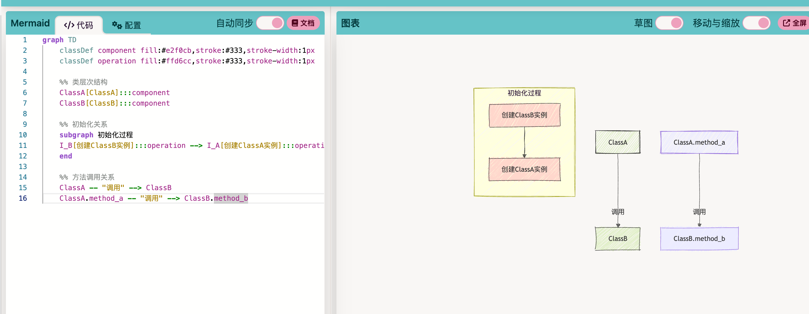
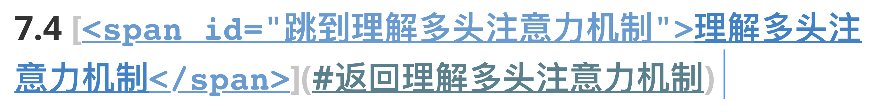

markdown¶
约 489 个字 59 行代码 5 张图片 预计阅读时间 2 分钟
画图 mermaid¶
---
title: Animal example
---
classDiagram
note "From Duck till Zebra"
Animal <|-- Duck
note for Duck "can fly\ncan swim\ncan dive\ncan help in debugging"
Animal <|-- Fish
Animal <|-- Zebra
Animal : +int age
Animal : +String gender
Animal: +isMammal()
Animal: +mate()
class Duck{
+String beakColor
+swim()
+quack()
}
class Fish{
-int sizeInFeet
-canEat()
}
class Zebra{
+bool is_wild
+run()
}
quadrantChart
title Reach and engagement of campaigns
x-axis Low Reach --> High Reach
y-axis Low Engagement --> High Engagement
quadrant-1 We should expand
quadrant-2 Need to promote
quadrant-3 Re-evaluate
quadrant-4 May be improved
Campaign A: [0.3, 0.6]
Campaign B: [0.45, 0.23]
Campaign C: [0.57, 0.69]
Campaign D: [0.78, 0.34]
Campaign E: [0.40, 0.34]
Campaign F: [0.35, 0.78]
mermaid在线预览工具 如图所示。
- mkdocs不解析mermaid（已解决 见
mkdocs learn）

锚点设置¶
从哪儿跳：
跳到哪里：
锚点 m2
主要还是 两种情况
- 一种是 配合a 标签
<a name="你起名字">使用 - 一种是 配合 span 标签
<span id="你又起了的一个名字"> - 然后
</会自动补全
演示示例：
- a 标签 + name
# 目录
- [跳转到部分1](#section-1)
- [跳转到部分2](#section-2)
<a name="section-1"></a>
## 部分1
这里是部分1的内容。
<a name="section-2"></a>
## 部分2
这里是部分2的内容。
a 标签 锚点演示
- span 标签 + id
# 目录
- [跳转到部分1](#section1)
- [跳转到部分2](#section2)
<span id="section1"></span>
## 部分1
这里是部分1的内容。
<span id="section2"></span>
## 部分2
这里是部分2的内容。
span 标签 锚点演示
span 标签 + id ||部分 2
看出区别来了吗？
a 标签+name，从哪儿跳，跳到哪儿都有变色
span 标签+id，从哪儿跳有变色，跳到哪儿没有变色
互跳，就：

🏷 span 标签
<span id="文字1">[文字1](#文字2)</span>
这里是文字1的内容。点击上方的“文字1”可以跳转到文字2。
<span id="文字2">[文字2](#文字1)</span>
这里是文字2的内容。点击上方的“文字2”可以跳转到文字1。
🏷 a 标签
[文字1](#文字2) <a id="文字1"></a>
这里是文字1的内容。点击上方的“文字1”可以跳转到文字2。
[文字2](#文字1) <a id="文字2"></a>
这里是文字2的内容。点击上方的“文字2”可以跳转到文字1。
箭头上写字¶
\(X \stackrel{F}{\rightarrow} Y\)
箭头上加字符¶
$\vec{a}$ 向量
$\overline{a}$ 平均值
$\widehat{a}$ (线性回归，直线方程) 尖
$\widetilde{a}$
$\dot{a}$ 一阶导数
$\ddot{a}$ 二阶导数
\(\vec{a}\) 向量 \(\overline{a}\) 平均值 \(\widehat{a}\) (线性回归，直线方程) 尖 \(\widetilde{a}\) \(\dot{a}\) 一阶导数 \(\ddot{a}\) 二阶导数
markdown多行大括号¶
居中对齐的大括号¶
\[
f(i)=
\left\{\begin{matrix}
1,i\in Q \\
-1,i\notin Q
\end{matrix}\right.
\]
标准大括号¶
左对齐的大括号
\[
\begin{cases}
x+y=5 \\
2x+3y=12
\end{cases}
\]
波浪号¶
\(\sim\)
正比于符号
\(\propto\)
积分符号
\(\int\)
任意
\({\forall}\)
存在
\({\exists}\)
等价于
\(\iff\)
\(\partial\)
\(\mathbf{I}\) 加粗黑体表示向量
\(\pi\)
\(\prod\)
\(\cdot\)
\(\times\)
\(\circ\)
\(\odot\)
正负号¶
\(x = \pm 5\)
希腊字母¶
- 阿尔法（\(\alpha\) ）：
$\alpha$ - 贝塔（\(\beta\)）：
$\beta$ - 伽玛（\(\gamma\)）：
$\gamma$ - 德尔塔（\(\delta\)）：
$\delta$ - 艾普西隆（\(\epsilon\)）：
$\epsilon$ - 泽塔（\(\zeta\)）：
$\zeta$ - 伊塔（\(\eta\)）：
$\eta$ - 西塔（\(\theta\)）：
$\theta$ - 艾欧塔（\(\iota\)）：
$\iota$ - 卡帕（\(\kappa\)）：
$\kappa$ - 拉姆达（\(\lambda\)）：
$\lambda$ - 缪（\(\mu\)）：
$\mu$ - 纽（\(\nu\)）：
$\nu$ - 克西（\(\xi\)）：
$\xi$ - 派（\(\pi\)）：
$\pi$ - 柔（\(\rho\)）：
$\rho$ - 西格玛（\(\sigma\)）：
$\sigma$ - 陶（\(\tau\)）：
$\tau$ - 宇普西隆（\(\upsilon\)）：
$\upsilon$ - 斐（\(\phi\)）：
$\phi$ - 凯（\(\chi\)）：
$\chi$ - 普赛（\(\psi\)）：
$\psi$ - 欧米伽（\(\omega\)）：
$\omega$
大写希腊字母：
- 大伽玛（\(\Gamma\)）：
$\Gamma$ - 大德尔塔（\(\Delta\)）：
$\Delta$ - 大西塔（\(\Theta\)）：
$\Theta$ - 大拉姆达（\(\Lambda\)）：
$\Lambda$ - 大克西（\(\Xi\)）：
$\Xi$ - 大派（\(\Pi\)）：
$\Pi$ - 大西格玛（\(\Sigma\)）：
$\Sigma$ - 大宇普西隆（\(\Upsilon\)）：
$\Upsilon$ - 大斐（\(\Phi\)）：
$\Phi$ - 大普赛（\(\Psi\)）：
$\Psi$ - 大欧米伽（\(\Omega\)）：
$\Omega$
4 个月前1 天前